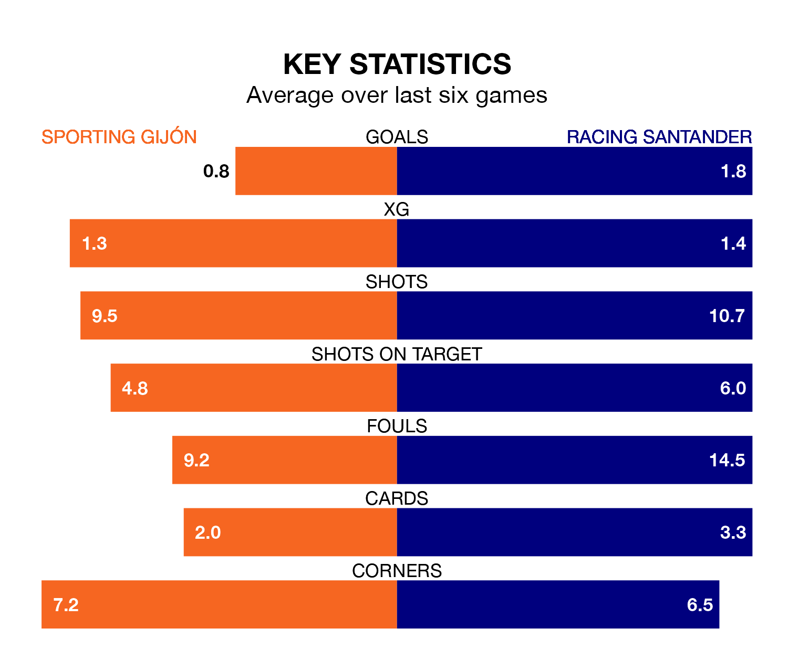

Racing Santander face Sporting Gijón on Saturday seeking to protect their long unbeaten run in the Segunda División.
Racing are unbeaten in five, with three wins and two draws, ahead of the 5.30pm kick-off.
They face a Sporting team who have won just two and lost three over the same number of games.
With 51 goals in 32 games so far this season, Racing are the league's highest scorers with 1.6 goals per game. But they are conceding more than average too, letting in 45 goals at a rate of 1.4 per game.
Sporting, meanwhile, are average scorers, with 1.1 goals per game. They have conceded 0.9 goals per game.
In Gerard Fernández Castellano, the away side have one of the league's sharpest shooters so far this season. He has notched 16 goals in 31 appearances, to sit second in the scoring charts.
His goal rate of one every 138 minutes is quicker than that of Gaspar Campos Ansó Fernández, the hosts' top scorer with a goal every 237 minutes, and a total of nine goals in 30 games.
In the last 10 years, Sporting and Racing have played each other on eight occasions. They won three each, and they drew twice.
On average, Sporting scored 1.2 goals and Racing 1.2 in those matches.
Their last meeting was on October 7, when Racing won 3-2 at home.
Racing are sixth in the table after 32 games, of which they have won 14 and drawn eight, earning 50 points.
Sporting are one place behind Racing in seventh, with 13 wins and 10 draws putting them on 49 points.
Sporting's last match was on Sunday, a 3-1 loss against SD Amorebieta, with Juan Ferney Otero Tovar getting the goal for Sporting.
Racing beat CD Eldense 2-1 last time out, also on Sunday, with Fernández Castellano and Roko Baturina on the scoresheet.
Updated: 12:16 (UTC), 25/03/24